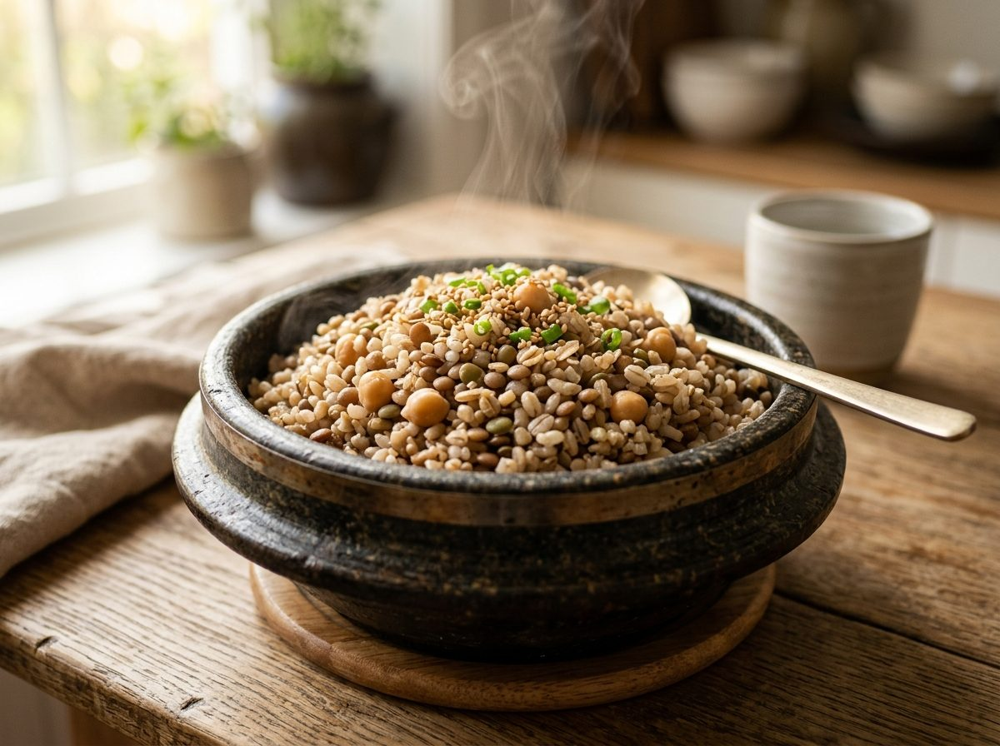
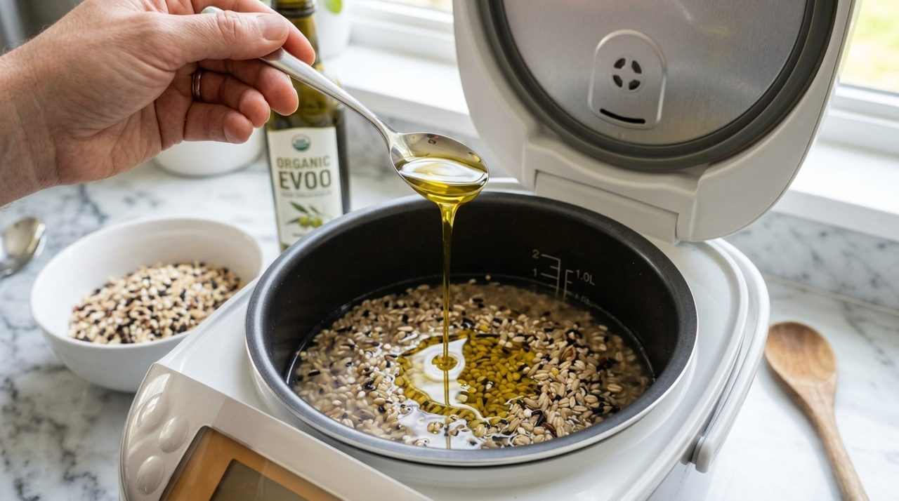
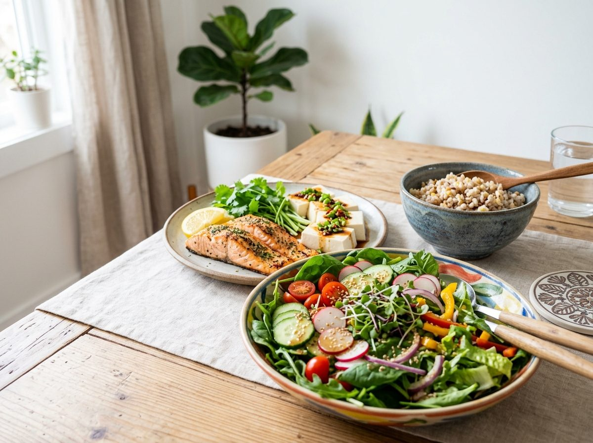

점심 식사를 마친 뒤 업무나 학업에 집중하려 할 때, 의지와 무관하게 눈꺼풀이 무거워지고 집중력이 흐려지는 현상을 겪는 분들이 적지 않습니다.
단순한 수면 부족이나 만성 피로 탓으로 치부하기 쉽지만, 인체 대사 과정을 면밀히 살펴보면 정제 탄수화물 위주의 식단에서 비롯되는 급격한 혈당 변동성이 주요 원인으로 지목됩니다.
주식으로 섭취하는 곡물의 배합 비율을 재조정하고 조리 방식을 정밀하게 보완하는 것만으로도, 식후 생체 리듬의 평온함을 유지하고 장기적인 혈관 건강을 도모할 수 있습니다.

갓 지어낸 통곡물 잡곡밥의 표면 윤기와 수분감 / 사진=네이버 공식 에디터 제공
식사 직후 찾아오는 극심한 나른함의 생리학적 기전
도정 과정을 거쳐 쌀겨와 쌀눈이 제거된 백미는 영양학적으로 신속하게 분해되는 단순 다당류에 가깝습니다.
섭취 직후 소화 효소에 의해 포도당으로 빠르게 분해되어 십이지장과 소장에서 급격히 흡수됩니다.
이 과정에서 혈중 포도당 농도가 급상승하면 췌장의 베타세포에서 인슐린 호르몬을 일시적으로 과다 분비하게 됩니다.
인슐린이 혈중 포도당을 세포 내로 밀어 넣으면서 혈당 수치가 단시간 내에 기준치 이하로 급락하는 현상이 발생하는데, 이때 뇌 조직으로 공급되는 에너지원이 일시적으로 제한되면서 나른함과 피로감이 증폭되는 구조입니다.
이러한 일상적 혈당 변동성이 장기간 누적될 경우 세포막의 인슐린 저항성이 증가하고, 체내 미세 혈관벽의 염증 수치를 높여 신체 전반의 노화 속도를 가속화하는 요인으로 작용합니다.

렌틸콩과 귀리를 중심으로 계량한 통곡물 원재료 상태 / 사진=농촌진흥청 국립농업과학원
소화 부담을 덜어내는 4가지 통곡물 배합 기준과 영양 분석
시중에서 유통되는 다곡물 혼합 제품을 무분별하게 혼합할 경우, 곡종별 열전도율과 수분 흡수 속도의 차이로 인해 설익은 조직이 발생하기 쉽습니다.
이는 소화관 내부에서 이상 발효를 일으켜 복부 팽만과 가스 생성을 야기하는 원인이 됩니다.
노년의학 전문 연구진이 제시하는 배합 기준은 대사 부담을 줄이고 영양 밀도를 극대화하는 4대 작물 중심의 균형 구조입니다.
| 작물 종류 | 권장 배합률 | 핵심 성분 | 대사 조절 기전 |
|---|---|---|---|
| 렌틸콩 (볼록렌즈콩) | 40% | 식물성 단백질, 엽산 | 소화 속도를 물리적으로 지연시켜 당질 흡수 완화 |
| 귀리 (연맥) | 20% | 베타글루칸 | 점성 섬유질을 형성하여 장벽 표면 코팅 및 흡수 억제 |
| 현미 | 20% | 비타민 B군, 가바(GABA) | 쌀눈 영양소 공급 및 지질 대사 활성화 지원 |
| 백미 | 20% | 단순 전분질 | 잡곡의 거친 식감을 중화하고 적정 수분 결합력 유지 |
렌틸콩의 함량이 40%에 달하지만 껍질 조직이 얇아 가열 시 부드럽게 연화되며, 콩류 특유의 풋내 없이 담백한 풍미를 형성하므로 일상적인 주식으로 섭취하기에 수월한 이점이 확인됩니다.

미온수 침지와 소량의 식물성 유지류를 활용한 조리 준비 / 사진=한국영양학회
거친 식감을 완화하고 흡수율을 낮추는 3단계 조리 절차
통곡물 섭취 시 속쓰림이나 더부룩함을 겪는 주요 배경에는 곡물 외피에 분포하는 '피틴산(Phytic Acid)' 성분이 존재합니다.
피틴산은 무기질 흡수를 방해하고 소화 효소의 접근을 차단하는 자가 방어 물질이므로, 과학적인 조리 공정을 통해 이를 비활성화하는 단계가 요구됩니다.
| 조리 단계 | 적용 기술 | 생화학적 반응 및 이점 |
|---|---|---|
| 1단계: 사전 침지 | 미온수(30℃) 6시간 불림 후 물 배출 | 피틴산 분해 유도, 무기질 생체 이용률 향상 및 가스 발생 저감 |
| 2단계: 발효주 첨가 | 취사수 기준 곡주(소주) 1~2잔 투입 | 알코올 기화열로 조직 연화, 총 폴리페놀 함량 17% 증진 (농진청) |
| 3단계: 저온 안정화 | 식물성 유지(올리브유) 1티스푼 후 냉장 보관 | 지질-아밀로오스 복합체 형성, 저항성 전분 전환으로 열량 흡수 40% 감소 |
조리 과정에서 투입된 에탄올 성분은 취사 중 비등점에 도달하면서 대기 중으로 온전히 증발하므로 신체 알코올 섭취 우려는 배제할 수 있습니다.
아울러 조리된 밥을 1~4℃ 냉장 환경에서 일정 시간 냉각할 경우, 전분 구조가 효소 분해에 저항하는 복합체로 재배열되어 소화관 내 포도당 방출 속도를 현저히 늦추는 효과를 나타냅니다.

섬유질과 양질의 단백질 식품을 앞세운 단계별 식단 구성 / 사진=보건복지부 식생활 지침
소화 효소 접촉을 늦추는 식사 단계별 섭취 요령
영양학적 조리를 완성한 이후에도 음식을 입에 넣는 순서에 따라 체내 대사 반응은 상이하게 나타납니다.
탄수화물을 단독으로 먼저 섭취할 경우 위장관을 통과하는 속도가 빨라져 혈당 상승 곡선이 가팔라질 수밖에 없습니다.
영양생리학에서 입증된 '식이섬유 ➔ 단백질 ➔ 복합 탄수화물'의 순차 섭취 원칙은 물리적인 소화 완충대를 형성합니다.
• 도입기 (첫 5분간 엽채류 섭취): 생채소나 해조류의 불용성·수용성 식이섬유를 먼저 저작하여 소화관 내부 점막에 완충 그물망을 형성합니다.
• 전개기 (양질의 단백질 및 지질 섭취): 두부, 생선, 살코기 등을 섭취하여 위장 운동 속도를 조절하는 소화관 호르몬(GLP-1)의 분비를 유도합니다.
• 안정기 (통곡물 탄수화물 섭취): 소화 속도가 완만해진 상태에서 준비된 통곡물 밥을 천천히 저작하여 섭취함으로써 식후 나른함을 차단하고 안정된 대사 환경을 유지합니다.

규칙적인 식습관과 수분 보충으로 유지하는 가벼운 신체 리듬 / 사진=국가공인 건강정보포털
🍯 오늘 확인한 저속노화 곡물 섭취 3대 핵심 요약
• 황금 조성 비율: 렌틸콩 40% + 귀리 20% + 현미 20% + 백미 20%로 배합하여 영양 균형과 소화 안정성을 동시에 도모합니다.
• 과학적 조리 공정: 미온수 6시간 침지 후 세척수 교체, 취사 시 곡주 1~2잔과 올리브유를 결합하여 조직 연화와 저항성 전분 전환을 유도합니다.
• 순차 섭취 원칙: 식사 시작 시 채소류를 먼저 섭취하고 단백질을 거쳐 통곡물을 마지막에 섭취하여 대사 부담을 경감시킵니다.
일상의 건강을 관리하는 과정은 거창한 요법이나 극단적인 섭취 제한보다, 매일 마주하는 식판 위의 작은 변화를 꾸준히 축적해 나가는 데서 비롯됩니다.
정갈하게 준비한 통곡물 한 그릇과 올바른 식사 순서를 통해 활력 넘치는 하루를 만들어 가시기를 권장합니다.